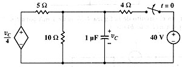

A11 TR analysis: Transitory analysis of circuit with dependent source (#2)
Question. Find the expression for vc(t).

Solution:
It is obvious that the initial condition in the capacitor will be 20 volts, because capacitor's voltage in the initial DC stage is the voltage between two resistors of 4 ohms, which will be 40/2=20. This should be clear, thus the DC part of the equivalent circuit will not be simulated to find the initial voltage. If this simple voltage divisor is not clear to you, stop using Symbulator and start using your mind! ;o)Number nodes. Describe circuit. Simulate it with TR:
sq\tr("ed,1,0,vc/4,0; r5,1,c,5,0; r10,c,0,10,0; cx,c,0,1E-6,20"):vc
20*exp(-250000*t)
Answer: The answer obtained is the right one.